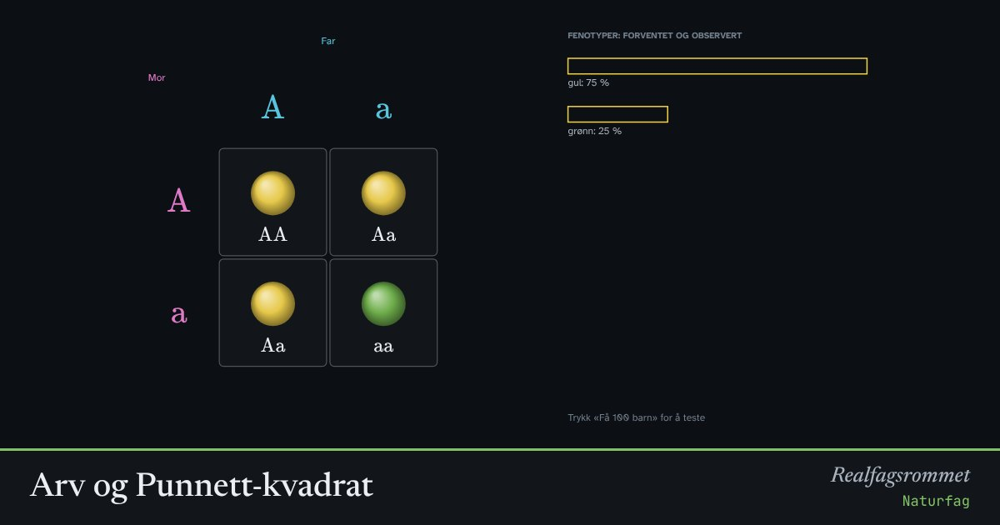

Arv og Punnett-kvadrat
Hvert barn får ett allel fra mor og ett fra far. Punnett-kvadratet viser alle mulige kombinasjoner og hvor sannsynlige de er.
Start animasjonen
Formler
Om animasjonen
Vanlig arv: Hos erter er allelet for gul farge (A) dominant over grønn (a). En plante med Aa er gul, men kan få grønne avkom.
Kjønnsbundet arv: Genet for rød-grønn fargeblindhet sitter på X-kromosomet. Gutter har bare ett X, så de blir fargeblinde hvis det X-et har allelet. Derfor er det mye vanligere hos gutter.
Kvadratet viser sannsynligheter. Søylene viser hva som skjer i en tilfeldig gruppe barn. Med få barn kan resultatet avvike mye.
Prøv dette
- To gule erteplanter får et grønt avkom. Hvilken genotype har foreldrene?
- Hvorfor kan en gutt ikke arve fargeblindhet fra faren sin?
- En mor er bærer og far har normalt fargesyn. Hvor stor er sjansen for at en sønn blir fargeblind?
- Hva er forskjellen på genotype og fenotype?
Kompetansemål
- Naturfag: DNA, arv og evolusjon
- Biologi 2: Arv og variasjon